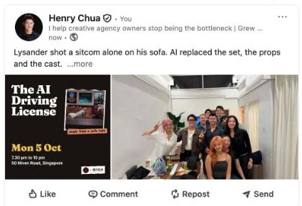

Drop a video, a photo and a poster into Claude. It checks your project files, writes the post and puts it in Buffer. You say yes, Buffer posts it. Once set up, our test took about 10 minutes, drop to live.
What this is: 11 free, open-source Claude skills for LinkedIn (MIT licence) that write and score your posts. They do not post. Their own README says so: These skills write. You post.
The posting goes through Buffer's connector for Claude, and Buffer works with LinkedIn as an official marketing partner.

You need: a paid Claude plan (Pro or above), the Claude desktop app, a Buffer Essentials plan (what we tested).
In the Claude desktop app, click the Code tab (Claude working on the files in a folder you pick). Find the 11 free LinkedIn skills on GitHub, paste the repo link and type:
scan this with NVIDIA SkillSpector, then install the skills if it is low risk
Sign up to Buffer and add LinkedIn. On claude.ai (same account as the app): Customize → Connectors → Add custom connector. Name Buffer, URL https://mcp.buffer.com/mcp. Add, Connect, sign in, approve (Buffer's steps). Test in the Code tab: list my Buffer channels
Start a Code tab session in a folder with your notes (past posts, event details), or put the facts in the prompt. Drag in the three files, paste the prompt, check the draft and preview, say yes.
Files left off? Buffer's connector needs files as web links. Drag them into the Buffer draft before it goes out.
Help me post this on my LinkedIn [tomorrow at 9 am]. It is about [what it is], and the goal is [sign-ups / an update / proof of work]. Check my project files for the facts and for things I have done before that fit. Use my LinkedIn skills to write it in my voice and score it. Save it as a draft in Buffer with these files and show me the preview. Schedule it only after I say yes.
Install NVIDIA's free SkillSpector, then run skillspector scan --no-llm <repo link>. The set we tested came back low risk.
Check the app is a named LinkedIn partner, as Buffer does. Read what you approve: our Buffer connection lists 9 permissions.
LinkedIn's User Agreement bans bots that post, comment or like. Buffer is the approved route. Check every draft too: ours said "tonight" for a class the next day.
Write and schedule in Buffer yourself until you know what works.
You know your voice and check every draft. One prompt does the research and the copy-paste.
Henry Chua.